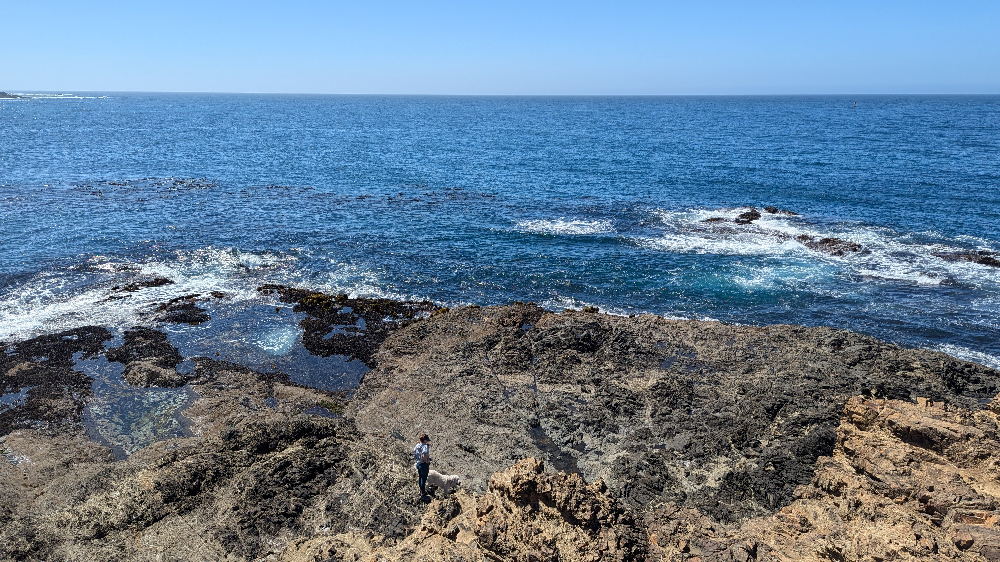
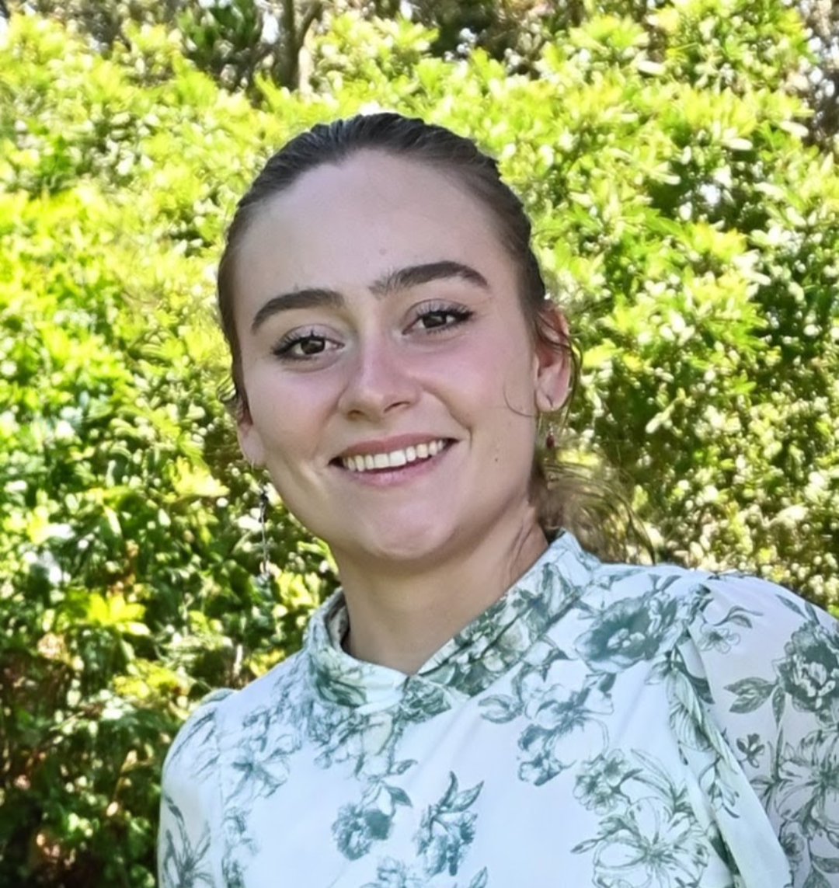
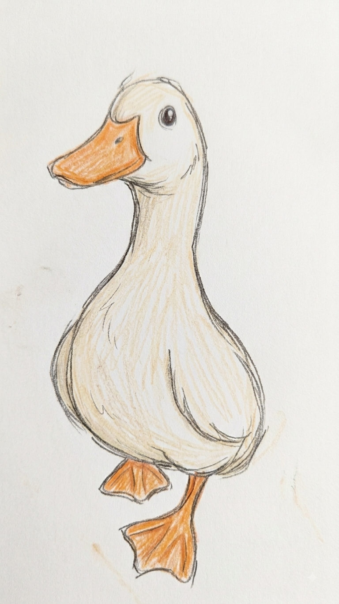

What I do

I learn complex systems, find the part making life difficult, and build solutions around the people who actually need to use them.
My background is in mathematics and environmental data science. What I really do is make complex data accessible: I ground a problem in why it matters, learn what the people and systems around it need, strip away the noise until I can see the root, and build outward from there.
I add complexity back only when it earns its place.
The Duck Problem
A small origin story about agency
When I was a little girl, I knew another little girl who could draw tiny ducks. I could not. She appeared to possess some mysterious duck-drawing faculty that had passed me over. But I had seen proof that a duck could be drawn, so I kept trying until I could draw one too.

I did not recognize until recently that my response to the duck was an early version of a larger pattern in how I meet problems. The fork usually looks something like this:
The usual path I observe
Where my brain goes
What draws me is the pause in which that constant becomes a question. What is happening here? What can I learn? Where can I intervene? That pause is increasingly difficult to find inside the urgency pandemic of modern life, which trains us to keep moving before curiosity has time to become agency.
Repair begins by believing there may be something worth noticing before we discard the object, the process, or the possibility that we have the capacity to understand it. Sometimes the reward is another ten years with a favorite shirt. Sometimes it is a better system. Either way, the pause matters. It is also the subject of one of my poems, Urgency.
Selected Solutions
Selected projects

LOC Lab
Forest Thermophilization & Disturbance Analysis
Pilot MEDS fellowship work building a national-scale R and Python repository, analysis pipeline, and apps for studying how U.S. forests are changing under climate and disturbance.
View project ->
WaVeS Lab
Satellite-Based Irrigation Mapping
Python geospatial workflows and segmentation experiments for tracing where irrigation expansion is actually happening across Sub-Saharan Africa.
View project ->
NCEAS Capstone
Wildfire Resilience Index R Package
Recent MEDS capstone work on a cloud-accessible wildfire resilience archive and open-source R package for querying, subsetting, and visualizing 100+ layers.
View project ->Quotes
Swipe, scroll, or use arrows
What I'm Working On